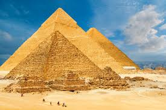

The following is an image of the pyrimids in Giza

Pyramids of Giza
- Location: Situated on the Giza Plateau near Cairo, Egypt.
- Main Pyramids: Comprises three primary pyramids: the Great Pyramid of Khufu, the Pyramid of Khafre, and the Pyramid of Menkaure.
- Great Pyramid of Khufu: The oldest and largest, originally standing at 146.6 meters (481 feet) tall.
- Historical Significance: The only one of the Seven Wonders of the Ancient World still largely intact.
- Construction: Built using approximately 2.3 million stone blocks, each weighing between 2.5 to 15 tons.
- Astronomical Alignment: Precisely aligned with the cardinal points, showcasing advanced knowledge of astronomy and engineering.
- The Great Sphinx: A limestone statue with the body of a lion and the head of a pharaoh, also part of the Giza complex.
- Purpose: Served as tombs for the pharaohs and symbolic representations of the primordial mound from which Egyptians believed the earth was created.
- Construction Techniques: Remain a topic of research and debate, with theories ranging from large labor forces to sophisticated engineering methods.
- Modern Significance: A major tourist attraction and enduring symbol of ancient Egyptian civilization.